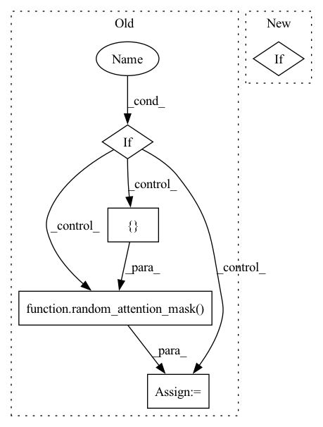

Pattern ID :10856

Before Change
input_ids = ids_tensor([config.batch_size, config.seq_length], config.vocab_size)
input_mask = None
if self.config.use_input_mask:
input_mask = random_attention_mask([config.batch_size, config.seq_length])
token_type_ids = None
if self.config.use_token_type_ids:
token_type_ids = ids_tensor([config.batch_size, config.seq_length], config.type_vocab_size)
After Change
input_ids = ids_tensor([self.batch_size, self.seq_length], self.vocab_size)
input_mask = None
if self.use_input_mask:
input_mask = random_attention_mask([self.batch_size, self.seq_length])
token_type_ids = None
In pattern: SUPERPATTERN
Frequency: 3
Non-data size: 5
Instances
Fragment ID: 37410041
Project Name: paddlepaddle/paddlenlp
Commit Name: 8d63af54fdac61a222f6738d2af3402328e76d96
Time: 2023-03-28
Author: 709153940@qq.com
File Name: tests/transformers/tinybert/test_modeling.py
M Class Name: TinyBertModelTester
N Class Name: TinyBertModelTester
M Method Name: prepare_config_and_inputs(1)
N Method Name: prepare_config_and_inputs(1)
M Parent Class:
N Parent Class:
M File Name: tests/transformers/tinybert/test_modeling.py
N File Name: tests/transformers/tinybert/test_modeling.py
M Start Line: 96
M End Line: 113
N Start Line: 193
N End Line: 208
'>
Before Change
input_ids = ids_tensor([config.batch_size, config.seq_length], config.vocab_size)
input_mask = None
if self.config.use_input_mask:
input_mask = random_attention_mask([config.batch_size, config.seq_length])
token_type_ids = None
if self.config.use_token_type_ids:
token_type_ids = ids_tensor([config.batch_size, config.seq_length], config.type_vocab_size)
After Change
input_mask = random_attention_mask([self.batch_size, self.seq_length])
token_type_ids = None
if self.use_token_type_ids:
token_type_ids = ids_tensor([self.batch_size, self.seq_length], self.type_vocab_size)
sequence_labels = None
'>
Fragment ID: 37410034
Project Name: paddlepaddle/paddlenlp
Commit Name: 8a5841015fd3fa92fc426c3683cd39f50669088f
Time: 2023-03-23
Author: 50394665+JunnYu@users.noreply.github.com
File Name: tests/transformers/roformer/test_modeling.py
M Class Name: RoFormerModelTester
N Class Name: RoFormerModelTester
M Method Name: prepare_config_and_inputs(1)
N Method Name: prepare_config_and_inputs(1)
M Parent Class:
N Parent Class:
M File Name: tests/transformers/roformer/test_modeling.py
N File Name: tests/transformers/roformer/test_modeling.py
M Start Line: 92
M End Line: 117
N Start Line: 98
N End Line: 113
'>
Before Change
input_ids = ids_tensor([config.batch_size, config.seq_length], config.vocab_size)
input_mask = None
if config.use_input_mask:
input_mask = random_attention_mask([config.batch_size, config.seq_length])
token_type_ids = None
if config.use_token_type_ids:
token_type_ids = ids_tensor([config.batch_size, config.seq_length], config.type_vocab_size)
After Change
input_mask = random_attention_mask([self.batch_size, self.seq_length])
token_type_ids = None
if self.use_token_type_ids:
token_type_ids = ids_tensor([self.batch_size, self.seq_length], self.type_vocab_size)
sequence_labels = None
'>
Fragment ID: 37410038
Project Name: paddlepaddle/paddlenlp
Commit Name: 428c21a246f93dea64a181d3825db9be8fc512aa
Time: 2023-02-28
Author: 35913314+1649759610@users.noreply.github.com
File Name: tests/transformers/skep/test_modeling.py
M Class Name: SkepModelTester
N Class Name: SkepModelTester
M Method Name: prepare_config_and_inputs(1)
N Method Name: prepare_config_and_inputs(1)
M Parent Class:
N Parent Class:
M File Name: tests/transformers/skep/test_modeling.py
N File Name: tests/transformers/skep/test_modeling.py
M Start Line: 91
M End Line: 102
N Start Line: 90
N End Line: 100